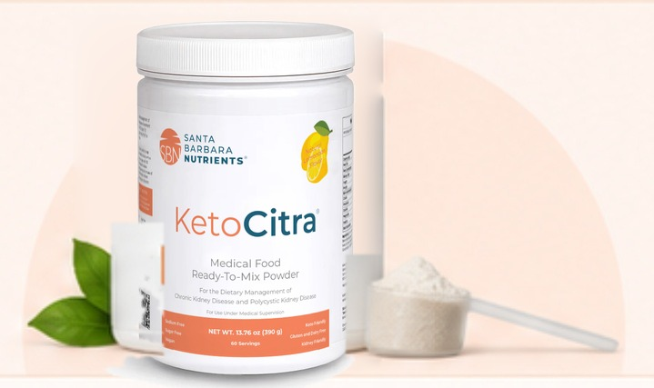

Thomas Weimbs, PhD
Founder · among the world's leading PKD researchers, UCSB professor

PKD care often stops at diagnosis — but a team of scientists and patients came together to go further, building the nutrition support that was missing. Backed by research and lived experience, our program helps you manage PKD proactively, one meal at a time.
Founder · among the world's leading PKD researchers, UCSB professor
Medical director · board-certified nephrologist, ADPKD specialist
Director of nutrition · decades in renal dietetics
Scientific director · scientist and PKD patient herself
Ren-Nu™ brings the education, personalized guidance, tracking tools, and ongoing support together in one structured program.
Turn metabolic and kidney-health research into practical everyday decisions.
16 weeks of guided educationAdapt the program to your kidney function, labs, preferences, and daily life.
3 individual dietitian sessionsUse nutrition, ketone, laboratory, and symptom tracking to learn how your body responds.
Tracking tools includedJoin live coaching calls and a community of people who understand PKD.
Ongoing live-call accessA medical food developed by PKD researchers to support nutritional ketosis and the dietary management of polycystic kidney disease.

A structured progression designed to help participants build knowledge, implement metabolic ketogenic nutrition safely, and develop sustainable long-term habits.
Learn the science and get your baseline.
Put the protocol into practice with our support.
Dial it in and feel the physical shift in your daily energy.
Walk away with sustainable habits for the rest of your life.
Enrollment is offered on a rolling basis — participants may begin once their application is reviewed and approved.
These aren't just theories. Our peer-reviewed published results show that proactive, metabolic lifestyle changes can visibly impact kidney health and reduce your symptom burden.
For about $14 a day during your 16-week intensive, you get a complete system: prsonalized dietitan care, digital tracking, lifetime coaching and a three-month supply of KetoCitra® devliverd to your door.
 Structured Online Curriculum — metabolic ketogenic
nutrition
principles tailored for PKD, including low-oxalate strategies and practical
tools.
Structured Online Curriculum — metabolic ketogenic
nutrition
principles tailored for PKD, including low-oxalate strategies and practical
tools.
 Three Months of KetoCitra® — shipped as a starter pack
with
a water bottle and pH meter.
Three Months of KetoCitra® — shipped as a starter pack
with
a water bottle and pH meter.
 Dietitian-Led Support — three one-on-one sessions plus
structured group support.
Dietitian-Led Support — three one-on-one sessions plus
structured group support.
 Weekly Coaching & Community Calls — lifetime
access to
live sessions and accountability.
Weekly Coaching & Community Calls — lifetime
access to
live sessions and accountability.
 Digital Tracking Tools — Pro Cronometer access during
the
program, plus lifetime access to our HIPAA-compliant tracking platform.
Digital Tracking Tools — Pro Cronometer access during
the
program, plus lifetime access to our HIPAA-compliant tracking platform.
 PKD-Specific Meal Plans & Recipes — curated
libraries
aligned with metabolic ketogenic nutrition.
PKD-Specific Meal Plans & Recipes — curated
libraries
aligned with metabolic ketogenic nutrition.
 Long-Term Sustainability Framework — habit formation
and
metabolic flexibility guidance beyond the program period.
Long-Term Sustainability Framework — habit formation
and
metabolic flexibility guidance beyond the program period.
Ask us about Shop Pay installment options at checkout.
Participants report meaningful changes in metabolic health, daily symptoms, and confidence managing PKD. Short clips worth a minute of your time — scroll or use the arrows to browse.
Experiences vary by individual. Ren-Nu™ is an educational program designed to support informed lifestyle changes.
Below are answers to common questions about the Ren-Nu™ program.
No. Ren-Nu™ is a structured nutrition and lifestyle education program. It does not replace medical care, and participants are encouraged to work closely with their healthcare providers.
The program provides structured guidance tailored specifically for individuals living with PKD, including renal-safe nutrient considerations. Participants should consult their physician before implementation.
No prior experience is required. The program begins with foundational education and progresses in a structured, guided manner.
Ren-Nu™ is designed for individuals with PKD who are motivated to engage in structured nutrition education. Eligibility is reviewed during the application process.
Participants retain lifetime access to weekly coaching and community calls, as well as continued access to the HIPAA-compliant data platform.
Ren-Nu™ is designed for individuals living with PKD who are ready to engage in a structured, research-informed nutrition program. If you're prepared to commit to consistency, education, and long-term sustainability, we invite you to apply.
Applications are reviewed to ensure program alignment.